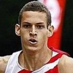

Bruno LE GAL a été sélectionné pour participer aux championnats du monde en moins de 69 kg NE WAZA (exclusivement sol) qui auront lieu du 28 au 30 novembre 2017 à Kyoto, au Japon.
Originaire de Guyane, Bruno Le Gal a été champion départemental à Kourou en 2004 en catégorie cadet. Repéré par le club de Saint-Maur, il arrive en France en 2006 où il remporte la médaille de bronze en championnat régional junior en 2006.
Bruno arrive à Saint-Étienne de Beaulieu en 2012 pour y poursuivre ses études d'ingénieur en arts plastiques. C'est là qu'il passe son deuxième dan de ceinture noire avant d'intégrer l'équipe de France Espoirs.